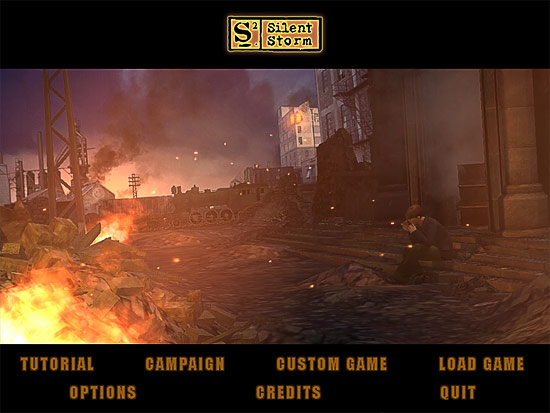
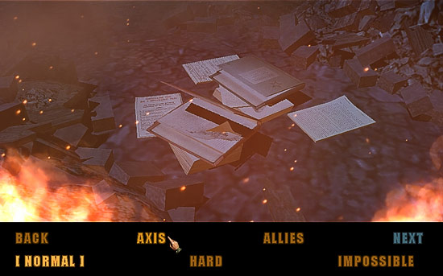
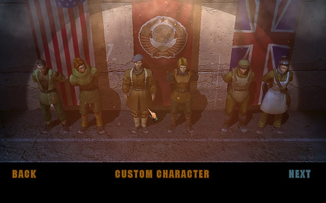
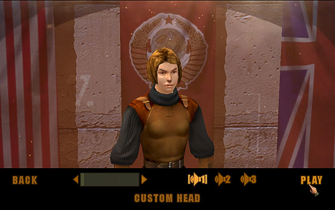

This chapter describes the main features of the game. The
interface and finer points of the gameplay are described in detail in appropriate
sections of this manual.
The plot and the objective of the game
In Silent Storm, you'll be commanding a small combat
squad of professional commandos performing
special covert operations in various countries during the WW2. The game includes
two campaigns: playing for Axis countries (Germany, Italy and Japan) or for
the Allies (Great Britain, the USSR and the USA). Silent Storm's genre
can be described as turn-based tactics with RPG elements.
At the beginning of the game you choose the main hero with
whom you'll be trying to accomplish all campaign missions. After a while you'll
be able to put together a fighting squad using the Agents File available at
base. Apart from yourself (i.e. your main hero), the squad can include up
to five people with various military professions. While at base, you'll be
able to fire any member of the group except the main hero and hire a replacement.
Also, base offers various weapons, ammunition, medical supplies and other
equipment needed to conduct special operations; you'll have to select what
you need and distribute the stuff between your people. Plus, base has hospital
for treating the wounded. Initial instructions and orders from the high command
you'll also receive at base.
After you get orders to begin an operation or decide to
take action on the basis of the clues you collected, you and your group will
be able to fly to the appropriate region of the world (in one of the countries
fighting the war). Then you'll have to reach the destination point on the
region map. On the way you might get involved in random encounters with various
enemies — regular troops, guards or even gangs of armed outlaws. On the one
hand, these clashes can be dangerous; on the other, you shouldn't always try
to avoid them since they provide combat experience and occasionally bring
valuable trophies, e.g. enemy weapons unavailable at base.
Your main task will be obtaining clues enabling you and
your command to reveal secret enemy operations. Usually clues include various
documents, letters, notes etc.; occasionally you'll have to meet and talk
with some people; sometimes you'll be ordered to get hold of a weapon prototype.
You can receive missions to bring people to base — e.g. rescue an agent or
a valuable specialist hold by the enemy.
Game modes
You'll be completing missions (including both script missions
and random encounters) playing in one of the two game modes: real-time mode
and turn-based mode.
Real-time mode
That's the regular mode used when your characters are not
engaged in direct contact with the opposition — either when there's no opposition
at all, or when the enemy hasn't yet spotted any of your characters. In this
mode, you can freely manage your characters; all characters can take action
simultaneously. The game returns to this mode from the turn-based one after
fighting is over and all enemies are killed, or if the remaining enemies do
not see you. In real-time mode you can leave the game zone at any time — providing
you found at least one clue, i.e. completed at least one objective in your
list.
Turn-based mode
The game switches to this mode automatically as soon as
you start fighting with the enemy, or the enemy spots any of your characters.
In the turn-based mode you take turns with the opposition to make your moves.
You'll only be able to leave the game zone during combat if all characters
come to the border of the zone.
During your turn the gameplay pauses (you have unlimited
time to make your decisions). You can issue commands to any of your characters
or to several of them at once; however, characters can only perform a limited
number of actions during one turn. You can use various tactics. Usually you
should attack the discovered enemy to inflict maximum possible damage, and
try to place your characters in positions providing the best possible cover
from enemy attacks. Apart from attacks, you'll need to take care of the wounded
members of your group and provide timely help to them. If for some reason
you want to avoid a direct clash, you can try to lead your characters spotted
by the enemy outside of the opposition's field of vision. After your characters
cannot perform any more actions during the current turn, you pass the turn
to the opposition (controlled by the AI). Click on End of Turn button in the
lower right screen section.
During enemy's turn your characters won't be able
to take any action at all, including actively defending themselves. The enemy
will try to attack all discovered members of your squad using his own characters.
Visual contact between characters is not necessary to attack — both you and
the enemy can spot targets by the noise they make and fire «by ear».
All you can do during the enemy's turn is to watch. When enemy characters
cannot take any further steps, the turn (and the control of the game) go back
to you.
Actions and Vitality
To understand the principles of managing your characters
in turn-based mode better, let's start with two parameters describing characters'
current state; these are Actions and Vitality. Both parameters are measured
in points, so in the game they are usually called Action Points (AP) and Vitality
Points (VP).
Action Points (AP)
This parameter defines how many actions character can take
during one turn in turn-based mode; it can be compared with character's professional
level. Each action costs a certain amount of APs; the more complex the action,
the more APs will have to be spent to take it. For example, crawling costs
much more APs than running the same distance; a pistol shot is many times
cheaper than a shot fired from grenade launcher. Reloading weapons also costs
APs. At the beginning of turn characters have maximum AP value; taking actions
according to your commands, they spent their APs. You can view character's
maximum AP value in Parameters window; the current value is displayed in large
figures to the right of the character's image on the game panel (and on the
tab with the character's name).
If a lot of APs is spent, the character won't be able to
take complex actions during the current turn. If his AP=0, he can't move at
all and must wait until the next turn. Since APs cannot be replenished during
the turn, it's important to know the cost of various actions. This information
is displayed next to the cursor or in tooltips for control buttons on the
game panel. The cost of moving to a map point is displayed in the circle at
the end of the mapped route. The colour of the route line provides additional
information: green means low AP cost; yellow means getting there would reduce
the characters' APs so much it would limit their ability to attack using current
shooting mode of the selected weapons (or they won't be able to use the weapons
at all). The section of the mapped route the character cannot make during
the current turn is marked in red. Please note that in turn-based mode,
AP costs of all actions performed by a single mouse click (e.g. firing) are
displayed next to the mouse cursor; «Move» command is issued by
double-clicking.
Before instructing your characters to take various actions,
try to figure out the best way to use their APs. For example, if a character
lying on the ground needs to take cover from enemy fire behind a stone wall
five metres away, telling him to Crawl there would cost much more APs than
instructing him to Get Up, Run and Lie Down. On the other hand, a running
character can be intercepted by an enemy you haven't noticed… Another example:
one long-range sniper-rifle shot can be much more efficient than firing the
whole pistol clip — all pistol bullets can miss the target or simply not reach
it. However, at close range pistol shots could inflict much heavier damage
to the enemy than a single rifle shot.
When all your characters have carried out your commands
or their AP value approaches zero, you must pass the turn to the opposition.
After opposition’s turn your characters restore
the initial AP values (note that the wounded characters may have less than
maximum amount of APs). You can give them new tasks or instruct to carry on
with the actions not completed during the previous turn due to lack of APs.
Vitality Points (VP)
This parameter defines characters' current health. The higher
this value, the more damage the character can sustain. Wounded characters
act less efficiently. Characters usually lose VPs when shot by enemy. Other
reasons include damage from explosions (grenades, land mines, booby-traps),
stabs and falls from high ground. Each character's current VP value is displayed
as a coloured bar on the tab with his name (on the game zone).
If total VP level significantly drops, the character starts
losing vitality during each turn; if he's bleeding heavily, he loses VPs much
quicker. When VP value reaches zero, the character faints and cannot move.
After the mission is completed, the unconscious members of your group must
be carried out of the game zone; otherwise they'll die. Characters may also die
if they suffer damage many times exceeding their VP value (or if their VP
falls below zero in an Impossible game). If your main hero dies or loses conscience,
the game is over.
Certain wounds may not simply reduce characters' VPs but
affect some of their abilities. Such damage is considered critical; it's indicated
by special icons appearing next to the character's image. E.g. a character
with a damaged hand may not be able to hold weapons; a leg wound can make
moving impossible; head wounds may cause lost of eye-sight or hearing, and
a blast wave can stun the character so he'll be unable to do anything at all.
Critical damage may be temporary or permanent (blue and red icons, respectively).
Temporary damage disappears after a while; permanent damage needs medical
assistance. In some cases such wounds can be treated only after you exit to
region map, or in hospital at base.
During missions you can provide first aid to the wounded
characters (stop the bleeding and dress the wounds). Every member of your
team has basic medical skills, but the best character for this job is medic.
«Dressed» wounds are indicated on the character's VP bar in pink.
After the wounds are dressed, the character's abilities partially restore
and he won't be losing more VPs during each turn. The higher the medic's skills,
the more advance instruments he can use and the more serious wounds he can
treat in the field. Dressing wounds takes a lot of time, so if you have several
critically wounded characters who need help, you might consider finishing
the mission as fast as possible and leaving the zone to heal them.
Hitting probability and damage
When you attack, there's a certain chance that the bullet
hits the enemy, the grenade reaches the place where the enemy character stands,
and the stab doesn't go off target. The actual probability of these events
depends on many factors; e.g. for firearms it depends on the weapon's parameters
(range and accuracy), the shooter's position (lying characters usually shoot
more accurately than standing ones), the firing mode (snap shots are less
accurate than aimed shots), zeroing in (each next shot is more accurate than
the previous one), on the character's Shooting skill, skills with the particular
weapon class and familiarity with the actual weapon. Also important is whether
the target is moving (it's easier to hit a standing enemy than a running one),
the target's visibility (firing at targets the shooter can see is more efficient
than firing «by ear»), the time of day (it's more difficult to hit
the target at night), presence and type of obstacles (firing through a glass
pane is more efficient than through a wooden wall), the shooter's state (a
wounded soldier fires less accurately than a healthy one) etc. Taken together,
all these factors give an average chance of successfully attacking the enemy;
that's probability of hitting the target.
When you take aim, the probability of hitting the target
with the selected weapon is displayed next to the cursor (a figure with %
symbol). The higher this value, the higher the chance the enemy will be damaged.
If the probability of hitting the target equals zero, there's no point to
attack — either the range is too long for the selected weapon or there's an
obstacle between you and the enemy. In the first case try another weapon (compare
their ranges using tooltips); in the second case, try to move your character
to another position so the obstacle won't be in the way.
Probability close or equal to 100% means you have a good
chance to hit the target. However, usually that costs too much APs. Accordingly,
the number of times you can attack the enemy during one turn (the number of
shots you can fire) drops. Note that one hit doesn't guarantee the enemy will
be taken out: in many cases it takes several good shots, and if you overspend
your APs you will not be able to do that during your turn. And then the enemy
can get lucky...
To choose the weapon and the best firing mode, compare probability
values for various modes and how many shots your character can fire in each
of them. For example, it's better to fire four times with 40% probability
of hitting the target than make a single 100% accurate shot, particularly
since with several shots each next is more accurate. For the same reason,
bursts may be quite efficient even with low probability of hitting the target.
When character is hit, his VP value drops by the amount
of damage inflicted; it's displayed by «flying» red digits. The
amount of damage is affected by many factors; the most important are the weapon's
parameters including ammunition and presence of obstacles between you and
the target. Weapons' parameters including the damage they inflict are displayed
in weapons' tooltips. Obstacles (walls, other objects, armour) absorb part
of the damage the bullet or the shell could inflict; if the obstacle is thick
enough, it provides complete protection. All other factors being equal, hitting
«vulnerable» body parts, particularly the head, inflicts heavier
damage. A stab in the back also causes more damage. Tip: to reduce the
damage the enemy causes to your characters, try to take cover and use obstacles,
or take positions which make hitting characters harder (it's easier to hit
a standing character than, say, a crouching one).
Interrupt
The strict sequence of taking turns in turn-based mode (your
turn — the opposition's turn — your turn…) may occasionally be interrupted.
This happens when one of the sides suddenly spots the other side's character
they've been unaware of: either your character notices an enemy character
during the opposition's turn, or the enemy spots your character first, fires
and misses. After that you get to make a move out of turn (interrupt the turns'
sequence). Interrupt makes the action in the game more dynamic and less predictable.
The main condition for interrupt is that the character who
intercepts the turn must have a certain amount of APs left from the previous
turn. Only this character can act during interrupt; you cannot control other
characters. The interrupting character has a chance to strike the enemy first.
After that the turn goes back to the opposition and the game proceeds normally.
For example, your character is standing behind a corner. It's
the opposition's turn; an enemy character walks from around the corner and
you spot him first. After checking chances game determines that there is an
interrupt, and the turn goes to you. You can attack the enemy providing your
character has enough APs. If the enemy character spots you first, interrupt
doesn't happen. However, it still may happen if the enemy fires and misses.
When an enemy character stands behind a corner and your character walks by,
the exact opposite happens. Tip: it might be useful to leave some APs at
the end of each turn to be able to take action in case of interrupt.
A few tips
Watch your soldiers' ammunition supplies:
reload their weapons in time, check the weapons between combats.
Pick up trophy weapons which have better parameters
than your own. If your side also uses such weapons, you'll get ammunition
at base; otherwise try to collect ammunition on the battlefield.
Don't be in a hurry to fire at targets you
cannot see but can hear: it might be a neutral character or even your mission
objective!
Check all boxes, safes etc. you find in the
game zones: they may contain valuable things.
OK, so now you're familiar with the main principles of
Silent Storm game. It's time to launch the game and put your knowledge
to practice. Good luck!
Main menu
When you launch the game you see the Main menu screen. It
has the following commands:

Tutorial
This command starts a special mission designed to help you
grasp the basics of the game's interface: camera controls, the game panel,
ways to control your characters. During tutorial you'll be given a number
of training mission objectives with all the necessary explanations and tips.
While playing the tutorial mission, you'll be able to save your games and
load them if necessary. Also, please refer to appropriate sections of this
manual describing the interface and the gameplay. Completing tutorial mission
may take some while, but after that you'll feel much more confident dealing
with real mission objectives. We strongly recommend to complete the tutorial
mission before you start a campaign!
Campaign
Starts a new game playing for one of the two opposing sides
in the WW2: the Axis countries or the Allies.
Load game
You can save your games while you play (regular and «quick»
saves); before you start a new mission and after the current mission is completed,
the game is saved automatically. This command calls up the list of saved games;
you can load any of them.
Options
Here you can change your graphics settings (they significantly
affect the game speed and the image quality); also provides access to sound
and gameplay options. Please refer to Interface section below for more.
Tip: the Main menu screen allows you to check the speed
of your video system. Note how quickly various objects and the mouse cursor
move on the screen. If you see jerky movements instead of smooth gliding,
try following recommendations on optimising your system settings (see Readme.txt).
Credits
Information about the authors of the game (see «Credits»
section of this manual).
Quit
Quits the game and exits to Windows.
Custom game
This command allows to load the modifications of the game,
that were created in the Silent Storm Editor — either the changes to the scenario
play or the additional missions. When you will enter the custom game menu,
the window with two lists will appear. The list on the right is the list of
the available modifications and the list on the left contains the modifications
that can be applied to the game. The name of the modification in the list
is taken from the description.txt file that should be part of the modification
distribution package. For more information on the modifications of the game
see the Mission Editor manual.
So, now you're ready to start the game. Please click on
Campaign command in the Main menu.
Choosing campaign and difficulty level

Use the menu commands in the lower screen section; the selected
command is highlighted and displayed in square brackets. Back and Next buttons
take you back to the Main menu or forward to the Hero Selection screen, respectively.
First of all you need to choose the side to play for.
The Axis countries
Here you'll perform covert operations on behalf of the Axis
countries (Germany, Italy and Japan), fighting against the Allies.
The Allies
Fighting for the Allies (Great Britain, the USSR and the
USA), you'll be conducting covert operations against the Axis countries.
The choice depends on your personal preferences; the complexity
of the game's plot and the number of various missions in both campaigns are
more or less the same.
Next you'll need to set the difficulty level of the game.
The choice is made only once for the whole campaign (to change the difficulty
level, you'll have to start a new game).
Normal
If you choose Normal game, you'll know where the clues are
immediately after you enter the game zone; you'll have detailed briefings
for and description of all mission objectives. You'll be able to save the
game at any moment. If your character's VPs drop below zero, he will faint
and remain in that state alive for quite a while. When the mission is completed,
such characters will leave the game zone automatically. When characters leave
the game zone, some of their wounds will also heal automatically.
Hard
With Hard difficulty level, you won't know where the clues
are until you find them; you'll know the total number of mission objectives
but won't have detailed description of them. You'll only be able to save the
game when it's not in turn-based mode (i.e. when you're not fighting the enemy).
Characters whose VPs drop below zero faint; when the mission is completed,
you'll have to carry them out of the zone manually using remaining characters.
When characters leave the zone, all their wounds will be dressed and a small
proportion of them will be healed.
Impossible
With Impossible game you won't know where the clues are
until you find them; you also will not know the number of mission objectives
or have any mission briefings (but you will know the main mission objective).
You'll be able to save the game only outside game zones, i.e. at base, on
the global map or on region map. Characters whose VP reaches zero faint; if
VP drops below zero, the character dies. Unconscious characters need to be
carried from the game zone manually. When characters leave the zone, all their
wounds will be considered as dressed by the character with the highest medical
skills; however, the characters will have to go to hospital at base to recover
completely.
If you don't have sufficient experience with games of this
type, we recommend choosing Normal game. After the choice is made, the Next
command becomes available; it calls up the Main Hero Selection screen.
Choosing the hero

You see six people in this screen (two from each country);
any one of them can be the main hero of your game. Make your choice: the hero
will lead a combat squad performing special operations and will have to survive
the whole campaign. Your hero's experience and skills will increase as he
completes the missions; he can be rewarded by the command for his efforts.
On the other hand, if the hero dies the mission is failed.
Each of the people you see here has been trained to one
of the following military professions (in addition to basic training):
Scout
Very strong and dexterous; has Melee skills; can use throwing
weapons, move stealthily and camouflage. Most efficient in close-range encounters
and hand-to-hand combat using cold melee weapons. Carries pistol, ammunition
and various of melee weapons.
Sniper
Very intelligent and dexterous, has Shooting and Snipe skills,
good Spot skills. Very efficient at long-range combat using sniper rifle.
Skilled at precision fire from a sniper rifle (always hits the target after
taking careful aim). Carries sniper rifle and ammunition.
Grenadier
Very strong and intelligent, good Shooting and Throwing
skills (especially good with grenades due to great physical strength). Efficient
at medium-range combat, handles heavy weapons well (e.g. grenade launcher).
Exert in grenade throwing. Apart from grenades, carries submachine-gun and
ammunition.
Soldier
Very dexterous and strong, good Shooting skills including
firing in bursts. Expert with automatic firearms like hand-held machine-guns
and submachine-guns. Efficient at medium-range combat, best accuracy with
stationary machine-guns. Quite efficient with all other weapons as well. Carries
submachine-gun and ammunition.
Medic
Very intelligent and dexterous, has Medicine skill. Very
good at providing first aid to the wounded to stabilise their condition for
the duration of the mission. Favourite weapons include rifle or submachine-gun.
Carries a few first-aid kits and rifle.
Engineer
Very intelligent and dexterous, has Engineering skills.
Main ability — setting up various mines and booby-traps and detect and disarm
mines and booby-traps set up by the enemy. Also he is good at picking up locks.
Carries submachine-gun and a set of mines.
Custom Character command calls up detailed parameters' screen
where you can choose the character's nationality, profession, change basic
attributes and view secondary ones. Please refer to Interface section of this
manual for more. This feature is recommended to experienced players; we suggest
you try one of the available «ready-made»; characters first.
Choose the character who'll be your alter ego in
the game. Your own military skills can help the main hero act more efficiently
and intelligently. If you prefer a wide range of skills and abilities, select
a soldier. After the choice is made, Next button becomes available; it calls
up Character Appearance screen:

There're is a bar and tree buttons in the lower screen section:
the bar allows to change your character's appearance, buttons on the right
allow you to choose his voice. Use triangular buttons at the bar ends to change
settings, or drag the coloured part of the bar left or right. Below there's
Custom Head button; it calls up character's Face Change screen (please see
the next chapter of this manual for more). After you've chosen the hero's
appearance and voice, click on Play to start your first mission.